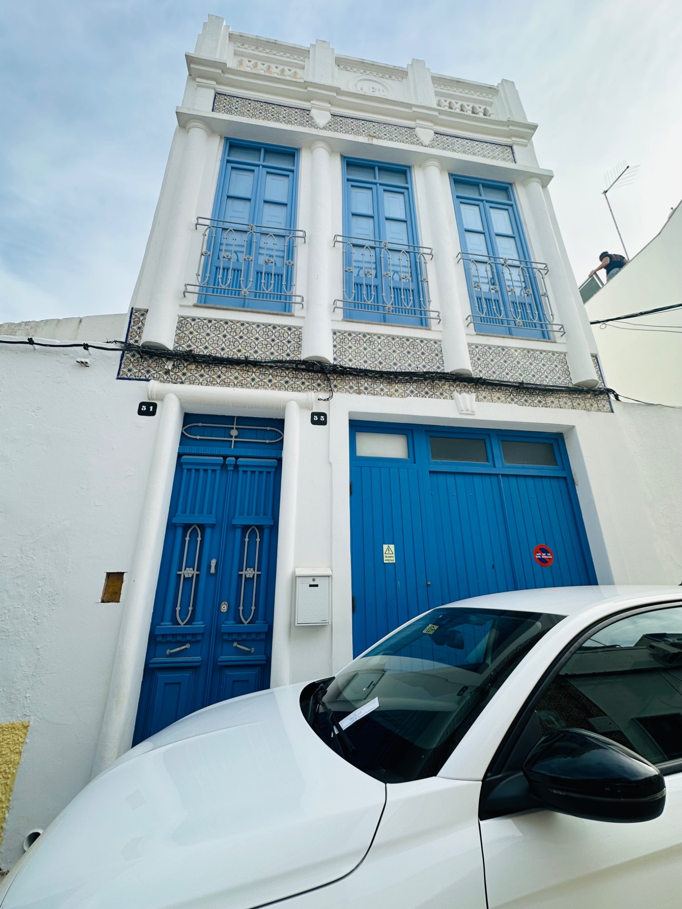

Casa
Rei Azul
Boutique Portuguese Townhouse · Olhão · Algarve
See the house
A first look at the blue façade, rooftop terrace, bedrooms, living spaces and traditional Portuguese details.



A traditional townhouse in the heart of Olhão.
Behind the bright blue doors is a three-storey Portuguese home with traditional patterned tiles, high ceilings, two bedrooms, two bathrooms, generous living spaces and a private rooftop terrace made for long Algarve evenings.
Everything for an easy stay
Sun, shade, BBQ and skyline views.
The rooftop terrace is the house’s signature space: a private open-air retreat above the city centre, with room for sun beds, relaxed drinks, outdoor dining and BBQ evenings.
Traditional tiles, blue shutters and quiet corners.
The house keeps its traditional Olhão character while adding the comforts needed for a longer stay: fast WiFi, fully equipped kitchen, two bathrooms, log burner, Smart TV and a sofa bed in the upper living space.
Olhão city centre
Restaurants, cafés, markets and the waterfront are close by, without needing a car every day.
Airport made easy
Faro Airport is around 15 minutes away by car, making short breaks and late arrivals simple.
Flexible space
Two bedrooms plus sofa bed, two bathrooms and separate living areas over three floors.
Stay in Casa Rei Azul.
Enquire for availability, rates and longer stays.
Book